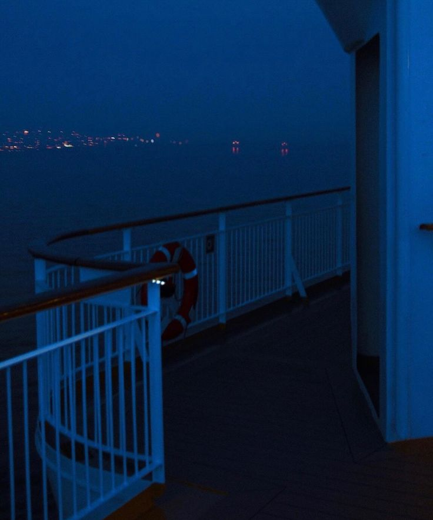

inspo.
my sources vary from content i see on social media platforms to song lyrics by artists
to book quotes from authors
the following are a few authors i constantly am inspired by:
authors / writers : mahmoud darwish, michael faudet, nizar qabbani, "Accident Report in
the Tall, Tall Weeds" - Ada Limon

i am in love withevery version of "do you think we're soulmates in every universe?"
tiktok : user @shrimp, user @buttonpoetry, user @lulushoeshoe, the "new word of the day" series , user @theworkmaker
singers : mistki, Lamp
tumblr : religious poetry, the entirety of poetry this, tumblr user inanotherunivrse,